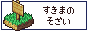
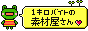
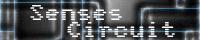
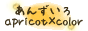
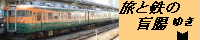

| サイト | 説明 | 管理者名 |
|---|
| >>画像素材（WWA）提供元 |
 |
ＷＷＡで、ＳＦ素材、和風素材ならここ！といわんばかりの有名所。Wikiが使用されており、デザインセンスも画像の探しやすさも抜群です。 |
yuhiro様 |
 |
ＲＰＧツクールのＲＴＰ(png)に匹敵するかもしれないくらいのリアルなＷＷＡ画像(gif)がたくさんあります。1度は行ってみることをオススメします。 |
げおるぐ様 |
| まてりある〜ん |
繊細な画像がたくさんあります。ここの画像は結構お気に入りです。 |
えふ・けー様 |
| >>画像素材（TOWN）提供元 |
 |
箱庭諸島用のとてもすばらしい画像がたくさんあります！！！３２×３２なのでTOWNやVXにも使えます！！ |
しろいわ様 |
| |
TOWNの背景画像の元画像提供元。実はこれをRPGツクールVXや
WOLFRPGエディタで組成してスクリーンショットを撮ってるんですｗ |
ごとりん様 |
|  |
こちらも上に同じく。近現代の画像ってなかなか少ないから貴重ですよ。 |
ワト様 |
| >>画像素材（その他）提供元 |
| |
昔から利用しておりました。
立体顔文字アニメと言えばやっぱりこことぱたアニメ様でしょう！ |
（＾つ＾）かちん様 |
 |
上に同じく。
立体顔文字アニメ以外にも特徴的なアイコンがたくさん。 |
りんたろ（’ぅ’）様 |
|  |
とにかく軽い素材の有名所。
背景画像などの一部を利用しております。 |
MEGU様 |
| |
Harbotがあった頃はここの素材を利用していました。
Harbot懐かしい・・・。
FireFoxによるレイアウト乱れ注意。IE推奨。
音楽が流れますので音量注意。 |
みー様 |
| |
かわいい素材がいっぱい！！！！
サイトの見栄えのよさが素晴らしくて絶句・・・。 |
ketty様 |
| |
2ch関連のアイコン・・・などといったらここで間違いないです。
チャットなど便利な顔文字辞書なんてのも。 |
まっつ様 |
| |
写真系素材サイト。旧ＷＧＳ時代の夕日背景画像を提供させてもらいました。感謝。感謝。 |
如月なずな様 |
| |
カード関連素材が多いです。
応用性はなかなか高そうです。 |
deku様 |
 |
TOWN・WWA等に主に背景画像を使用させていただいております。独特の雰囲気のサイトも必見です。 |
蒼い猫様 |
| >>音楽提供元 |
| FREEDOM HOUSE 2nd |
WWA・VX用に音楽を利用させていただいております。王道といえるものから特殊なものまで、さまざまな音楽があります。 |
氷石彩亜様 |
 |
任天堂系の音楽素材ならここ！さらにポケモンを超リアルに書いたポケモン図鑑も・・・ |
ヤシン様 |
| |
WWA作品で音楽を使わさせております。テーマ別に欲しい素材が見つかるのでとても便利です。 |
多夢様 |
 |
ゲーム用の音楽が数多くあります！！ジャンル別に分かれてるのもうれしい！ |
般若様 |
 |
こちらはＦＦ系の音楽素材があります！ |
Yoshi様 |
 |
こちらはＭＯＴＨＥＲ系の音楽素材があります！ |
なにがし様 |
 |
多数の効果音素材があります。こんなにたくさんの素材があるところはなかなかないでしょう。wavファイルをauファイルに変換するツールがあれば、WWAでも使用できます。 |
WEB WAVE LIB 運営委員会(代表：しまだ ありこ)様 |
|  |
単に利用するための素材ではなく、とても聞きごたえのある音楽素材が多数配布されています。 |
hitoshi様 |
| >>フォント提供元 |
|  |
一部のフォントをお借りしています。その他各種素材が配布されております。 |
京風子様 |
 |
一部のフォントをお借りしています。フォント以外にも美しい壁紙が配布されております。 |
dwuk様 |
|  |
一部のフォントをお借りしています。フォント以外では、各種鉄道関連コンテンツ。実に見飽きない。 |
Yokochan様 |
| >>HTML/Javascript関連素材提供元 |
 |
おなじみHTMLのちょっとした活用法などを紹介しているサイトです。旧MPのテンプレートはここからお借りしました。 |
YU-KI様・HISA様 |
| |
文字を入れて「つくる」を押せば一瞬で文字タグGET！
ぱどタウンに特化したものもあります。 |
もじたぐ様 |
 |
チャットがメインのサイトですが、案外知らない文字タグが結構たっぷり。 |
かわ様 |
| 無料ホームページテンプレートの素材屋 |
テーブルタグの提供先です。いろいろ参考になりました。 |
TG様 |
| 太郎のハピタンぱどタンを103倍楽しもう |
ぱどタウンで使えるタグ大量紹介！
もちろん一般のサイトで使えるものもあります。 |
太郎（・＿・）様 |
| Cabel's blog lol（cabel.name）※英語サイト |
一部Javascript素材の提供元です。クリックで画像を拡大するスクリプト（FancyZoom）をお借り致しました。 |
Cabel様 |
| >>CGI/Perl関連スクリプト提供元 |
| brassiere |
TOWNスクリプト配布元（原作）です。休止中ですが、デフォルト状態のTOWNをダウンロードできます。 |
桑田湘平様 |
| |
TOWNスクリプト配布元（改造・追加機能）です。素晴らしい発想の改造に驚嘆！ |
たっちゃん様 |
 |
ＷＷＡサイトの王道的サイトです。サイトの演出のこりかたも素晴らしいです。
各種ＷＷＡ連動ＣＧＩの一部はここから配布されております。 |
メリノ・
ピロト様 |
| |
TOWN内「Customer Floor」のログイン等に関するシステムの提供元です。Perlスクリプトの他、PHPスクリプトも配布されております。 |
CGI-Garage様 |